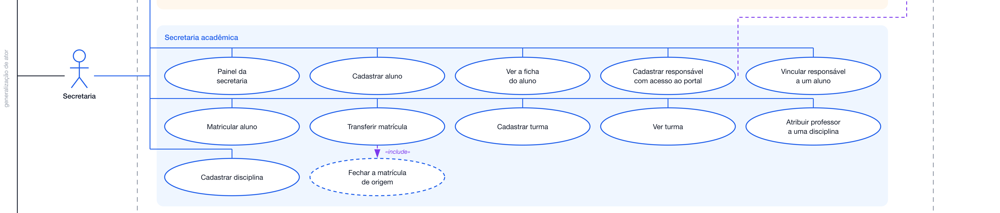
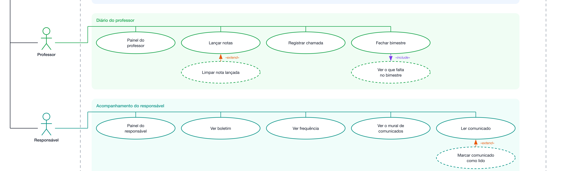
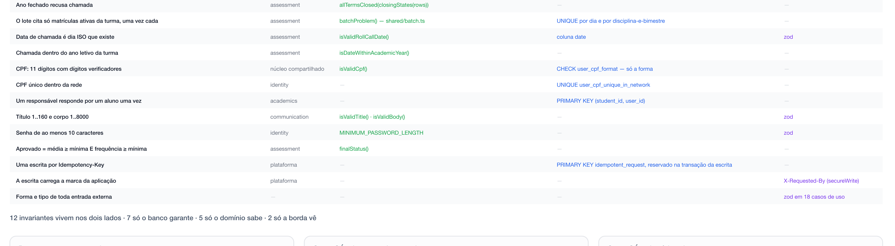
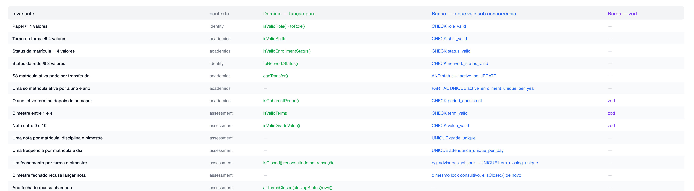
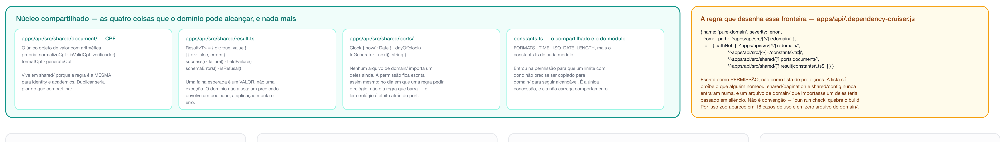
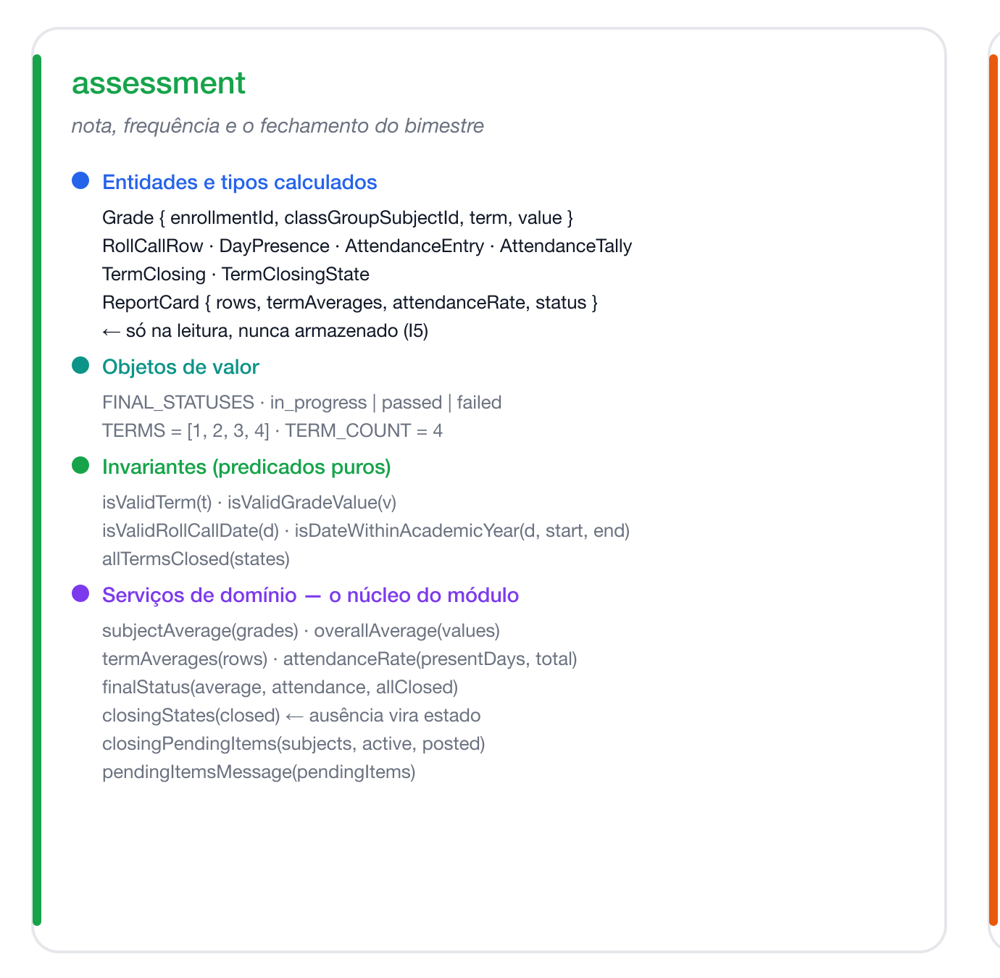
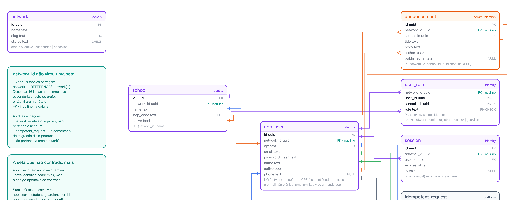
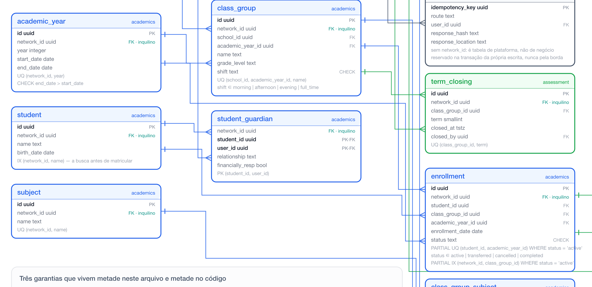
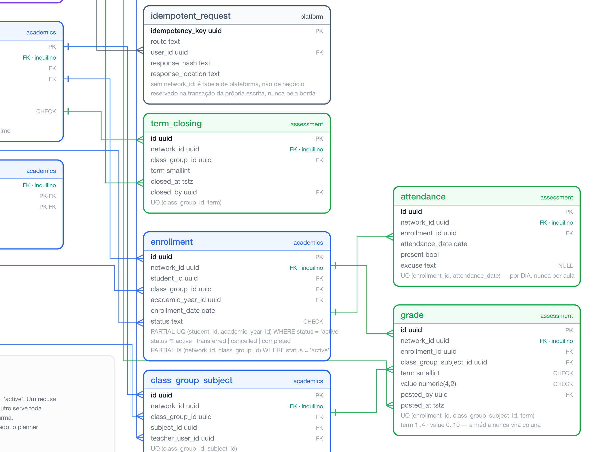

Estágio 1 — a secretaria que cabe em um repositório
TEES2 · Tópicos Especiais em Engenharia de Software II Instituto Federal do Espírito Santo 20 de agosto de 2026
O caminho de hoje
Que sistema é este, e por que ele é tão simples
Um SaaS escolar multi-tenant no seu primeiro estágio: quarenta redes pagantes, duas pessoas, um servidor. Tudo o que não resolve uma dor de hoje ficou de fora de propósito.
Que sistema é este
Um SaaS escolar multi-tenant. Uma rede contrata; dentro dela existem escolas, turmas, alunos e as pessoas que respondem por eles.
Quem usa, e para quê
Administração da rede — cria escolas, convida gente, define o ano letivo
Secretaria — cadastra aluno e responsável, matricula, transfere, monta turma
Professor — lança nota, registra chamada, fecha o bimestre
Responsável — acompanha boletim, frequência e mural
A escala de referência do Estágio 1
40redes pagantes
55escolas
18kalunos
2pessoas no time
Um servidor. Três perguntas de suporte por semana.
A secretaria trocou uma planilha compartilhada e um diário de papel por um lugar só.
O que o Estágio 1 é
Um monólito modular atrás de uma API JSON. Nada dói ainda — e essa é exatamente a medida certa para o tamanho do problema de hoje.
Código
quatro domínios:
identity — quem entra, com que papel, em que escola
academics — quem estuda, onde e com quem
assessment — nota, frequência e o fechamento do bimestre
communication — o que a escola diz às famílias
uma API JSON que esses domínios respondem
uma SPA React que consome
sessão em tabela, cookie carregando só o id
migrações versionadas
Infraestrutura
um servidor de aplicação em contêiner
um PostgreSQL gerenciado, com point-in-time recovery — voltar o banco a qualquer instante
um domínio com TLS
Operação
deploy manual por comando — tolera 2 min fora do ar
backup diário, com ensaio de restauração toda semana
três métricas anotadas à mão, uma vez por semana
O aluguel permanente: um servidor, um banco, um pipeline de migração — e a disciplina de manter a fronteira entre os quatro módulos.
O que ficou de fora, de propósito
Nenhum deles resolve um problema que este sistema tem hoje. Cada um cobra aluguel permanente — deploy, monitoração, plantão — antes de pagar por si.
Ficou de fora
Por que não agora
Entra quando
Gateway de pagamento
as redes pagam por transferência bancária
a primeira rede pedir cartão — S02
Object storage
a papelada da matrícula fica em papel, na secretaria
pedirem anexo na matrícula — S03
E-mail / mensageria
o comunicado vive no mural do portal
ficar provado que ninguém abre o mural — S04
Fila e worker
fechar bimestre é uma transação que termina rápido
o primeiro fechamento que travar a secretaria — S05
Réplica de leitura
um banco dá conta de 18 mil alunos
a leitura começar a disputar com a escrita — S08
Observabilidade
três métricas à mão bastam para ver a linha de base
a métrica à mão parar de explicar — S11
Busca dedicada
450 alunos por rede: a varredura é invisível
a varredura aparecer na medição — S13
Microsserviços
o produto ainda é CRUD com regra de negócio
extrair o primeiro módulo — S14
CDN · Cache · Balanceador · WAF · CI/CD
custo fixo sem dor correspondente
um de cada vez, com a dor descrita
Onde o Estágio 1 mora
Quatorze estágios, cada um entrando por uma dor demonstrada. Estes são os que o documento já nomeia — os demais chegam nas próximas aulas.
Estágio
O que entra
A dor que o chama
S01 — hoje
monólito modular, API JSON, SPA, PostgreSQL
nenhuma ainda: a planilha acabou
S02
gateway de pagamento
uma rede quer pagar com cartão
S03
object storage
a secretaria quer anexar documento à matrícula
S04
e-mail (a porta Mailer já está desenhada)
ninguém abre o mural, e agora há medição provando
S05
fila e worker
o fechamento do bimestre trava a secretaria
S08
réplica de leitura
relatório disputa banco com a escrita
S11
observabilidade
a métrica anotada à mão parou de explicar
S13
busca dedicada
a varredura do ILIKE '%termo%' aparece na medição
S14
extração de módulo
um contexto precisa de ciclo de vida próprio
O sinal de medição de hoje: p95 do lançamento de notas abaixo de 300 ms · CPU do banco abaixo de 20% · attendance com ~3,6 milhões de linhas por ano letivo.
As dores plantadas de propósito
Simplicidade aqui não é atalho: é a decisão certa. Mas algumas escolhas já se sabe que vão doer — e saber onde é o que transforma a próxima refatoração em plano, não em susto.
A busca de aluno varre a tabela
O índice student_by_name ordena e pagina a lista, mas não serve à caixa de busca: ela pergunta name ILIKE '%termo%', e curinga à esquerda não é coisa que um btree procure.
A 450 alunos por rede isso é invisível, e foi deixado assim de propósito: é a medição que tem que justificar o Estágio 13.
Não há camada anticorrupção
academics importa Role de identity e usa o tipo como está; assessment consome Enrollment sem traduzir.
É relação Conformista sobre linguagem publicada. Barato agora — e é a conta que o Estágio 14 paga.
Nenhum evento de domínio
Zero. unitOfWork() foi escrito como único ponto de commit exatamente para que o outbox, quando existir, caiba lá e em nenhum outro lugar. Mas ele não existe.
Deploy para e volta
Dois minutos fora do ar, por comando, na mão. Ninguém reclamou ainda — e no dia em que reclamarem, a dor tem nome e estágio.
Requisitos funcionais — acesso e rede
Estes requisitos não existiam escritos. Foram reconstruídos a partir das rotas HTTP que o sistema expõe e dos casos de uso que os módulos publicam — são um retrato do que existe, não um documento que precedeu o código.
Qualquer pessoa autenticada
RF01 Entrar informando rede, CPF e senha
RF02 Recuperar a sessão corrente a cada carga da página
RF03 Encerrar a própria sessão
RF04 Trocar a própria senha, com mínimo de 10 caracteres
Administração da rede
RF05 Ver o painel da rede com contagens de escolas e usuários
RF06 Cadastrar escola, única por nome dentro da rede
RF07 Listar as escolas da rede, paginadas
RF08 Definir ano letivo com início e fim, único por rede
RF09 Listar os anos letivos da rede
RF10 Convidar usuário atribuindo um ou mais pares (escola, papel)
RF11 Receber a senha provisória gerada no convite
RF12 Listar usuários da rede, filtrando por papel
Requisitos funcionais — secretaria
O papel com mais superfície no Estágio 1: quinze capacidades, todas escopadas às unidades sob responsabilidade de quem entrou.
Pessoas
RF13 Ver o painel com totais das suas unidades
RF14 Buscar aluno por nome, com paginação
RF15 Cadastrar aluno com nome e data de nascimento
RF16 Ver a ficha do aluno: responsáveis e matrículas
RF17 Cadastrar responsável com acesso ao portal
RF18 Listar responsáveis da rede
RF19 Vincular responsável a aluno, com parentesco
RF20 Ver quais responsáveis ainda não estão vinculados
Matrícula e turma
RF21 Matricular aluno em turma de um ano letivo
RF22 Transferir matrícula ativa para outra turma
RF23 Cadastrar turma com nome, série e turno
RF24 Listar turmas por escola e ano letivo
RF25 Ver a ficha da turma: disciplinas e matriculados
RF26 Atribuir professor a disciplina da turma
RF27 Cadastrar e listar disciplinas da rede
Requisitos funcionais — professor, responsável e comunicação
Professor
RF28 Ver as turmas e disciplinas em que leciona
RF29 Lançar notas de uma disciplina em um bimestre, em lote
RF30 Apagar uma nota já lançada, enviando valor nulo
RF31 Registrar a chamada de um dia, em lote
RF32 Ver o que falta para fechar o bimestre, por disciplina
RF33 Fechar o bimestre da turma
Responsável
RF34 Ver os alunos por quem responde
RF35 Ver o boletim de uma matrícula
RF36 Ver a frequência de uma matrícula
RF37 Ver o mural de comunicados
RF38 Abrir um comunicado
RF39 Marcar comunicado como lido
Comunicação
RF40 Publicar comunicado para os responsáveis de uma escola
RF41 Listar os comunicados publicados
RF42 Acompanhar a taxa de leitura de cada comunicado
Secretaria e administração da rede: são os dois únicos casos com dois atores primários.
Requisitos não funcionais — e como cada um é verificado
Um requisito não funcional sem verificação declarada é uma intenção. A terceira coluna é o que separa os dois.
#
Requisito
Como é verificado hoje
RNF01
Todo dado pertence a uma rede, e nenhuma consulta cruza esse limite
network_id em 16 das 18 tabelas + escopo vindo da sessão
RNF02
Papéis são atribuídos por escola, não por rede
PK (user_id, school_id, role) em user_role
RNF03
O processo não guarda estado: reiniciar não desconecta ninguém
sessão em tabela; jornada no navegador cobre o caminho
RNF04
Uma escrita repetida não cria dois registros
PK de idempotent_request, reservada dentro da transação
RNF05
Uma escrita só é aceita se vier da aplicação
X-Requested-By exigido em secureWrite
RNF06
Nenhuma escrita fica pela metade
unitOfWork() é o único ponto de commit
RNF07
Fechar bimestre e lançar nota não se intercalam
pg_advisory_xact_lock sobre (turma, bimestre)
RNF08
Senha nunca é guardada em texto claro
Bun.password.hash — argon2id
RNF09
Segredo e dado sensível não vazam no log
redação em shared/log/redaction.ts, com teste
RNF10
p95 do lançamento de notas abaixo de 300 ms
medido à mão, uma vez por semana, com pg_stat_statements
Requisitos não funcionais — manutenção e recuperação
#
Requisito
Como é verificado hoje
RNF11
Um módulo só enxerga outro pela porta da frente
regra no-cross-module-shortcut — o build quebra
RNF12
O domínio não conhece banco, HTTP, log nem biblioteca de terceiro
regra pure-domain
RNF13
Um caso de uso só pode citar um pacote externo: zod
regra no-sdk-in-application
RNF14
O núcleo compartilhado não importa contexto nenhum
regra shared-knows-no-domain
RNF15
O front só enxerga o servidor por um pacote de tipos
regra web-sees-only-contracts
RNF16
O bundle que um responsável baixa tem teto de tamanho
bun run budget, contra o manifesto do Vite
RNF17
Toda entrada externa é validada antes de tocar a regra
zod em 18 casos de uso, na borda
RNF18
Uma falha esperada é resposta, não exceção
Result<T> em 17 arquivos, 52 pontos de recusa
RNF19
Backup diário, com ensaio de restauração semanal
scripts/backup.sh e scripts/restore-test.sh
RNF20
Uma migração não comprime a janela de compatibilidade
tests/migration_window.test.ts lê cada arquivo
RNF21
Sessão expirada é recolhida sem intervenção
job a cada 15 min, sob lock consultivo
RNF22
O desligamento não derruba requisição em curso
SIGTERM: para de aceitar → drena → fecha o pool
O que o sistema faz, e que regras ele guarda
Casos de uso, invariantes, entidades, dados e ciclos de vida. Cinco vistas do mesmo domínio, cada uma respondendo a uma pergunta diferente.
Casos de uso (1 de 2)
Cinco atores, seis áreas. O que cada papel consegue fazer — derivado das rotas HTTP que existem, não de um documento de requisitos que ninguém escreveu.
Cinco atores, seis áreas. O que cada papel consegue fazer — derivado das rotas HTTP que existem, não de um documento de requisitos que ninguém escreveu.
Quinze casos: é o papel com mais superfície no Estágio 1, e o que vamos abrir por inteiro mais adiante.

Transferir matrícula inclui fechar a matrícula de origem — sempre, na mesma transação.
Casos de uso — professor e responsável
O professor escreve; o responsável só lê. Marcar comunicado como lido é a única escrita do lado da família.

«extend» é comportamento opcional: limpar uma nota já lançada estende o lançamento.
Onde mora cada invariante
Vinte e seis regras, e três lugares possíveis para cada uma: a função pura no domínio, a restrição no banco, e o zod na borda. A mesma regra escrita duas vezes não é duplicação.
Aprovado por média e frequência nunca vira coluna. É calculado na leitura, e por isso não envelhece.

Guardar o resultado criaria uma segunda verdade, que fica velha na primeira correção de nota.
Invariantes — conjuntos fechados e unicidade
As quatro primeiras são conjuntos fechados: existe predicado, existe CHECK, e o zod nem precisa opinar.

Repare nas linhas com travessão na coluna do domínio: unicidade não sobrevive à concorrência no código.
A camada de domínio, bloco a bloco
Dezessete arquivos, quatro contextos delimitados. Nenhum deles importa banco, HTTP, log, agendador ou biblioteca de terceiro — e isso é verificado por ferramenta, não por combinado.
A permissão é escrita como lista do que PODE, não do que não pode. Uma lista de proibições só proíbe o que alguém lembrou de nomear.

ports/ está lá para o Clock e o IdGenerator, mesmo sem nenhum arquivo de domínio usando ainda.
Domínio — assessment por dentro
O módulo com mais regra pura do sistema: média por disciplina, média do bimestre, percentual de frequência e o status final saem daqui, todos como função sem efeito.

closingStates() transforma AUSÊNCIA de registro em estado: não existe coluna dizendo “aberto”.
Modelo de dados
Dezoito tabelas, quarenta chaves estrangeiras. Dezesseis das dezoito carregam network_id: o inquilino não é uma coluna qualquer, é o escopo de tudo.
A rede é o inquilino. O CPF é o identificador de acesso e é único dentro da rede; o e-mail não é único, porque uma família compartilha um endereço.

app_user é a pessoa, não a credencial: não existe tabela separada de responsável.
Modelo de dados — academics
student_guardian aponta de academics para identity — a mesma direção do professor. Nenhuma chave sai de identity, o que faz dela uma folha também no banco.

enrollment carrega os dois índices parciais com WHERE status = 'active'.
Modelo de dados — assessment
Média, percentual e status não estão aqui. attendance é a maior tabela do sistema: uma linha por aluno por dia, cerca de 3,6 milhões por ano letivo na escala de referência.

term_closing só guarda o que foi FECHADO. O aberto é a ausência da linha.
Ciclo de vida da matrícula
Nasce ativa, e a única transição escrita em código é a transferência. cancelled e completed existem no CHECK e nenhum caso de uso escreve neles.
Três árvores, um processo. Monólito modular atrás de uma API JSON, com a dependência sempre apontando para dentro — e a fronteira cobrada por ferramenta.
Arquitetura da aplicação (1 de 2)
Da tela React até a tabela, passando pela composição, pela borda HTTP, pelos quatro módulos e pelo núcleo compartilhado.
Cada módulo tem a mesma forma: uma porta (index.ts), casos de uso, regras puras e repositórios. http/ só entra pela porta.
A seta laranja aponta para cima: infra/ serve o domínio, nunca o contrário.
Arquitetura — o que o portão recusa
Seis regras, três cruzeiros. Não é convenção nem revisão de código: é o build que quebra.
web-sees-only-contracts é escrita como permissão — nada fica sem nome para escapar.
Arquitetura — o núcleo compartilhado
Infraestrutura sem regra de negócio. A seta nunca sobe daqui para dentro de um módulo — e é por isso que extrair um módulo no Estágio 14 não arrasta o shared junto.
unitOfWork() é o único ponto de commit da aplicação.
O sistema em números
Estes oito números não são decoração: existe um teste que os compara com o repositório e reprova a suíte quando divergem.
Um número que ninguém remede para de ser medição e vira história sobre o passado.
O caminho de um POST, do clique ao commit (1 de 2)
Este é o diagrama que costura os outros: mostra, em ordem, tudo por que uma matrícula passa entre o clique no formulário e a linha no banco.
Repare onde a reserva da chave acontece: dentro da transação, não antes dela.
Cada peça com uma linha dizendo por que ela está aqui — e, mais importante, o que ela não faz.
Runtime e borda
Bun — runtime, gerenciador de pacotes e executor de testes. Uma ferramenta no lugar de quatro.
Hono — roteador e cadeia de middleware. Não tem opinião sobre camada nem sobre banco.
zod — valida forma na borda. Não conhece regra de negócio: isso é do domínio.
Dados
PostgreSQL — restrições, índices parciais e locks consultivos são parte do desenho, não detalhe.
Bun.sql — SQL escrito à mão, com parâmetro. Não há ORM: o SQL desta escala é curto, e o ORM esconderia justamente o índice parcial que garante a regra.
Observação e disciplina
pino — log estruturado, com redação de campo sensível.
dependency-cruiser — três cruzeiros, seis regras. É o que faz a fronteira ser verificada e não combinada.
Verificação
bun test — 95 arquivos de teste dos dois lados
Playwright — 5 jornadas contra o servidor de verdade
Vitest + MSW — o front, com a API dublada
A árvore do repositório
Três workspaces e cinco pastas de apoio. Cada uma com um dono claro — e nenhuma com dois.
exemplo_saas/
├── apps/
│ ├── api/ o servidor: quatro módulos, borda HTTP, núcleo compartilhado
│ └── web/ a SPA React: uma pasta por área, carregada sob demanda
├── packages/
│ └── contracts/ os tipos que atravessam a fronteira — e nada mais
├── migrations/ 0001_initial_schema.sql — o esquema inteiro, em um arquivo
├── scripts/ migrate, seed, backup, restore-test, magic-values
├── tests/ os portões do repositório: diagramas, tamanho, comentário, layout
├── e2e/ 5 jornadas no navegador, contra o servidor de verdade
├── infra/ docker compose: os dois bancos do desenvolvimento
└── docs/ o documento do estágio, os diagramas, estes slides
A árvore do servidor
A mesma forma repetida quatro vezes. Quem aprendeu um módulo, sabe navegar os outros três.
apps/api/src/
├── main.ts raiz de composição: valida ambiente, sobe, agenda, desliga
├── identity/ 7 casos de uso · 5 agregados · 4 repositórios
│ ├── index.ts a única porta — linguagem publicada
│ ├── domain/ regras puras: network, school, user, role, session
│ ├── application/ orquestra, valida com zod, abre unitOfWork()
│ └── infra/ repositórios e o SQL
├── academics/ 18 · 6 · 6 quem estuda, onde e com quem
├── assessment/ 4 · 4 · 3 nota, frequência, fechamento
├── communication/ 3 · 2 · 0 o que a escola diz às famílias
├── http/ rotas, schemas, presenters, estáticos — nenhuma regra
└── shared/ infraestrutura sem regra de negócio
├── db/ http/ log/ jobs/ config/ pagination/
└── ports/ document/ result.ts constants.ts ← o que o domínio alcança
Onde mora cada teste, e que pergunta ele responde
Quatro lugares, quatro perguntas diferentes. O lugar do arquivo já diz o que ele tem direito de assumir.
Onde
Quantos
Que pergunta responde
apps/api/tests/
45
a regra está certa? — contra o banco de teste, de verdade
apps/web/tests/
41
a tela mostra o que devia? — com a API dublada por MSW
tests/
9
o repositório continua obedecendo a si mesmo?
e2e/
5
funciona de ponta a ponta, no navegador, com o servidor real?
Os portões de tests/ são incomuns
diagrams — os números do diagrama batem com o repositório?
file_length — nenhum arquivo passou de 180 linhas?
no_comments — o código continua se explicando sem prosa?
migration_window — nenhuma migração comprime a janela?
MSW responde o que o teste mandar responder. Três defeitos reais passaram verdes por essa fresta — o dublê concordava com a suposição errada.
É para isso que existem as 5 jornadas: elas atravessam o proxy do Vite, o cookie de primeira parte e o banco. Nenhum teste unitário prova isso.
Uma fatia vertical, aberta por inteiro
Matricular um aluno: do formulário React até o índice parcial que recusa a segunda matrícula ativa. Oito camadas, o código completo de cada uma, sem pular nenhuma.
A anatomia de uma fatia vertical
Toda escrita deste sistema atravessa as mesmas oito camadas, de fora para dentro, e cada uma tem uma responsabilidade e uma proibição — é a proibição que mantém a fatia fina. Este é o mapa dos próximos slides.
Camada
Do que ela é responsável
O que ela NÃO pode fazer
tela React
coletar os campos, mostrar a recusa e cunhar a chave do envio
decidir se a matrícula pode existir — ela não conhece regra nenhuma
tipo em packages/contracts
declarar a forma do que atravessa a fronteira
ter comportamento: nem função, nem zod, nem import do servidor
rota em http/
conferir escopo, chamar o caso de uso e traduzir o resultado em status
abrir transação ou escrever SQL — não conhece tabela alguma
schema zod da borda
recusar corpo malformado antes de qualquer consulta
consultar o banco: não sabe se o aluno existe nem de que ano é a turma
caso de uso em application/
abrir a transação, buscar o contexto, montar a entidade, devolver Result
escrever SQL à mão ou responder HTTP — não sabe o que é 201
regra em domain/
tipos e funções puras: é quem dá a mensagem que a secretaria lê
importar sql, Hono, zod ou repositório — nenhuma E/S
repositório em infra/
traduzir entidade em INSERT e UPDATE, devolvendo boolean
escolher política: não decide mensagem nem qual campo culpar
tabela e restrição no banco
a garantia que sobrevive a dois pedidos simultâneos
explicar: devolve violação, nunca uma frase para a secretaria ler
A dependência aponta sempre para dentro: o de fora conhece o de dentro, nunca o contrário.
O percurso, do clique à linha no banco
Nove passos, cada um em seu arquivo. Nenhum deles sabe como o outro funciona por dentro — só o que ele promete devolver.
A secretaria escolhe turma e ano letivo e preenche a data, na ficha do aluno — students/EnrollmentForm.tsx
O handleSubmit valida os três campos com zod ainda no navegador; faltando um, nada sai da máquina — features/registrar/schemas.ts
A mutação envia POST /api/v1/registrar/enrollments com a chave do envio no cabeçalho Idempotency-Key — features/registrar/mutations.ts
secureWriteMiddleware exige a marca X-Requested-By; jsonIdempotencyMiddleware lê a chave e prepara a reserva, que só vira linha dentro da transação — http/secureWrite.ts, shared/http/idempotency.ts
A rota confere a forma do corpo e o escopo: aluno e turma têm que estar sob as escolas daquela secretaria — http/routes/registrar/enrollments.ts
O caso de uso abre a transação e busca aluno, turma e ano letivo; qualquer ausência vira recusa de campo — academics/application/enroll.ts
A entidade é montada em memória com status: ACTIVE_ENROLLMENT_STATUS — academics/domain/enrollment.ts
O repositório executa INSERT ... ON CONFLICT ... DO NOTHING e devolve apenas se a linha nasceu — academics/infra/enrollmentRepository.ts
Nasceu: 201 com Location da ficha. Não nasceu: 422 com a mensagem no campo studentId, e a transação volta atrás — http/response.ts
1. A tela — o formulário
Repare no que não está aqui: regra nenhuma. A tela sabe desenhar três campos e sabe onde pendurar a mensagem que voltar — error no campo, Alert no formulário.
O zod do navegador só evita a viagem inútil; quando o servidor recusa mesmo assim, applyRefusal devolve a mensagem ao campo que a causou, em vez de a um alerta genérico.
A chave nasce no navegador, uma por envio, e só é trocada em submission.accepted(): dois cliques no mesmo botão carregam a mesma chave, e o segundo não cria uma segunda matrícula.
2. O contrato — a única costura entre os dois lados
Treze linhas para esta fatia inteira, e nenhuma função: o contrato diz só a forma do que atravessa a fronteira, e desaparece no build — se o servidor mudar um campo, o front para de compilar.
export type CreatedRecord = {
readonly id: string;
};
export type EnrollmentStatus = (typeof ENROLLMENT_STATUSES)[number];
ENROLLMENT_STATUSES é repetido aqui de propósito, porque o pacote não pode importar o servidor — e um teste cobra que as duas listas continuem iguais.
3. A rota — escopo, chamada e tradução
Vinte e quatro linhas e nenhuma regra de matrícula: a rota confere o escopo da secretaria, chama o caso de uso e traduz — recusa vira 422, sucesso vira 201 com Location.
Repare no que o schema da borda não faz: z.string().trim() e nada mais. Quem cobra uuid e data é o caso de uso — forma malformada é 400, regra quebrada é 422.
Os imports são o mapa do arquivo: shared/, o próprio domain/ e os repositórios do módulo — nenhum Hono, nenhum sql escrito aqui. E é neste zod que aparece o que a borda não cobrou.
import { z } from 'zod';
import { unitOfWork, type Connection } from '../../shared/db';
import { uuidIdGenerator } from '../../shared/ports';
import { failure, fieldFailure, schemaErrors, success, type Result } from '../../shared/result';
import { CODES, FIELDS, MESSAGES } from '../constants';
import { ACTIVE_ENROLLMENT_STATUS, type Enrollment } from '../domain/enrollment';
import type { ClassGroup } from '../domain/classGroup';
import * as students from '../infra/studentRepository';
import * as academicYears from '../infra/academicYearRepository';
import * as enrollments from '../infra/enrollmentRepository';
import * as classGroups from '../infra/classGroupRepository';
const schema = z.object({
networkId: z.string().uuid(),
studentId: z.string().uuid(MESSAGES.studentRequired),
classGroupId: z.string().uuid(MESSAGES.enrollment.classGroupRequired),
academicYearId: z.string().uuid(MESSAGES.academicYearRequired),
enrollmentDate: z.string().date(MESSAGES.enrollment.dateFormat),
});
type Target = {
networkId: string;
studentId: string;
classGroupId: string;
academicYearId: string;
};
type EnrollmentContext = { studentName: string; classGroup: ClassGroup; year: number };
5. O caso de uso — as três buscas
Olhe o primeiro argumento de cada busca: é o sql da transação, não uma conexão nova — e cada ausência vira recusa no campo que a causou, com código e mensagem prontos.
A quarta recusa não é ausência, é incoerência: a turma existe, mas pertence a outro ano letivo. Nenhuma restrição do banco cobre isso, porque as duas chaves são independentes na tabela.
Repare que a recusa é return, não throw — e ainda assim a transação volta atrás: unitOfWork reconhece o Result recusado e desfaz o que já tinha sido escrito.
O arquivo inteiro, e nenhum import: a lista fechada, o tipo da entidade e duas funções puras. canTransfer é a regra que dá a mensagem — e que o UPDATE vai repetir em SQL.
export const ENROLLMENT_STATUSES = ['active', 'transferred', 'cancelled', 'completed'] as const;
export type EnrollmentStatus = (typeof ENROLLMENT_STATUSES)[number];
export const ACTIVE_ENROLLMENT_STATUS: EnrollmentStatus = ENROLLMENT_STATUSES[0];
export type Enrollment = {
id: string;
networkId: string;
studentId: string;
studentName: string;
classGroupId: string;
classGroupName: string;
schoolId: string;
academicYearId: string;
year: number;
enrollmentDate: string;
status: EnrollmentStatus;
};
export function isValidEnrollmentStatus(value: string): value is EnrollmentStatus {
return ENROLLMENT_STATUSES.some((status) => status === value);
}
export function canTransfer(enrollment: Enrollment): boolean {
return enrollment.status === ACTIVE_ENROLLMENT_STATUS;
}
7. O repositório — o INSERT que não pergunta
Repare que o INSERT não consulta se já existe: ele deixa o índice parcial responder, e trata zero linhas como recusa em vez de exceção. O UPDATE faz o mesmo com AND status = 'active'.
export async function insert(sql: Connection, enrollment: Enrollment): Promise<boolean> {
const created: { id: string }[] = await sql`
INSERT INTO enrollment (id, network_id, student_id, class_group_id, academic_year_id,
enrollment_date, status)
VALUES (${enrollment.id}, ${enrollment.networkId}, ${enrollment.studentId},
${enrollment.classGroupId},
${enrollment.academicYearId}, ${enrollment.enrollmentDate}, ${enrollment.status})
ON CONFLICT (student_id, academic_year_id) WHERE status = 'active' DO NOTHING
RETURNING id`;
return created.length === 1;
}
export async function markAsTransferred(
sql: Connection,
networkId: string,
id: string,
): Promise<boolean> {
const updated: { id: string }[] = await sql`
UPDATE enrollment
SET status = 'transferred'
WHERE network_id = ${networkId} AND id = ${id} AND status = 'active'
RETURNING id`;
return updated.length === 1;
}
8. O banco — a tabela e o índice parcial
O comentário da migração é a decisão de projeto: a regra mora aqui porque unicidade não sobrevive à concorrência no código — dois pedidos simultâneos passam pelo mesmo SELECT, e só um INSERT sobrevive.
CREATE TABLE enrollment (
id uuid PRIMARY KEY,
network_id uuid NOT NULL REFERENCES network(id),
student_id uuid NOT NULL REFERENCES student(id),
class_group_id uuid NOT NULL REFERENCES class_group(id),
academic_year_id uuid NOT NULL REFERENCES academic_year(id),
enrollment_date date NOT NULL,
status text NOT NULL DEFAULT 'active',
created_at timestamptz NOT NULL DEFAULT now(),
updated_at timestamptz NOT NULL DEFAULT now(),
CONSTRAINT status_valid CHECK (status IN ('active','transferred','cancelled','completed'))
);
CREATE TRIGGER enrollment_updated_at BEFORE UPDATE ON enrollment
FOR EACH ROW EXECUTE FUNCTION set_updated_at();
-- A student may not hold two ACTIVE enrollments in the same academic year. The partial
-- unique index guarantees it inside the database — the rule does not depend on the
-- application remembering it (I8).
CREATE UNIQUE INDEX active_enrollment_unique_per_year
ON enrollment (student_id, academic_year_id)
WHERE status = 'active';
-- Roll call, report card and closing always start from the class group's list of active
-- students.
CREATE INDEX active_enrollment_by_class_group
ON enrollment (network_id, class_group_id)
WHERE status = 'active';
9. O teste — a recusa que prova o índice
O teste não olha a exceção do PostgreSQL: ele cobra a mensagem em português no campo certo, e depois lê o banco direto para confirmar que continua existindo uma única matrícula ativa.
test('a second active enrollment for the same student in the same year is refused with a field error', async () => {
const scenario = await fullScenario();
const [alreadyEnrolled] = scenario.students;
const [, anotherClassGroup] = scenario.classGroups;
const result = await academics.enroll({
networkId: scenario.network.id,
studentId: alreadyEnrolled.id,
classGroupId: anotherClassGroup.id,
academicYearId: scenario.academicYear.id,
enrollmentDate: ENROLLMENT_DATE,
});
expect(errorsOf(result)).toEqual([
{
field: 'studentId',
code: 'duplicate_active_enrollment',
message: 'Este aluno já tem matrícula ativa neste ano letivo.',
},
]);
expect(await studentStatuses(alreadyEnrolled.id)).toEqual(['active']);
});
O que esta fatia prova
Três coisas que só aparecem quando se abre a fatia inteira — e que nenhum diagrama de arquitetura mostra sozinho.
A mesma regra, dois lugares
canTransfer() no domínio dá a frase que a secretaria lê: "Apenas uma matrícula ativa pode ser transferida."
O AND status = 'active' no UPDATE dá a garantia: sob dois pedidos simultâneos, só um fecha a matrícula de origem.
É a tabela de invariantes em ação — a coluna do domínio dá a MENSAGEM, a do banco dá a GARANTIA, e nenhuma substitui a outra.
A invariante que só o banco garante
active_enrollment_unique_per_year é parcial: só vale onde status = 'active'.
Por isso o mesmo aluno pode ter várias matrículas no histórico e uma única ativa por ano letivo.
Nenhum SELECT antes do INSERT daria essa garantia: dois pedidos simultâneos passariam pelos dois. É a invariante I8.
A recusa é valor, e mesmo assim faz rollback
O caso de uso devolve o Result recusado com return; unitOfWork reconhece a recusa, desfaz a transação e entrega o valor a quem chamou.
Na transferência é isso que impede a matrícula de origem de ficar fechada quando a nova não pôde nascer.
No ciclo de vida da matrícula, active → transferred é a única aresta que algum caso de uso escreve: cancelled e completed existem no status_valid e ninguém escreve neles — ainda.
O outro lado da fronteira
Uma SPA React que não guarda regra nenhuma: ela pergunta, mostra e envia. E só enxerga o servidor através de um pacote de tipos.
Stack do frontend (1 de 2)
O que roda no navegador, o que roda só no build, e onde está a fronteira que o depcruise cobra.
@escolaviva/contracts é o único caminho do repositório que o front pode importar.
Uma pasta por área. O carregamento sob demanda segue essa divisão: um responsável nunca baixa as telas da secretaria.
apps/web/src/
├── main.tsx provedores e o roteador
├── app/ a casca: Layout, AppHeader, AreaNavigation, guards, routes
├── features/
│ ├── session/ entrar e sair
│ ├── account/ trocar a própria senha
│ ├── network/ 7 telas — administração da rede
│ ├── registrar/ 15 telas — secretaria (students, class-groups, guardians, subjects)
│ ├── teacher/ 4 telas — diário
│ ├── guardian/ 5 telas — acompanhamento
│ └── announcements/ 2 telas — comunicados
└── shared/
├── api/ uma instância de Axios, e mais nada faz fetch
├── ui/ peças reusadas por toda área: Loading, Empty, LoadFailed, PageHeader
├── labels/ format/ theme/
A porta de entrada
Três campos: rede, CPF e senha. A rede é o inquilino — a mesma pessoa pode existir em duas redes com CPFs iguais e ser gente diferente em cada uma.
Tela de entrada em 1280×800
Um painel por papel — rede e secretaria
O menu e o painel mudam com o papel, e o papel vem da sessão. Ninguém escolhe em qual área entra.
Administração da redeSecretaria
Um painel por papel — professor e responsável
O professor vê as turmas em que leciona; o responsável vê os filhos pelos quais responde. Os dois recortes saem da mesma consulta escopada por network_id.
Diário do professorAcompanhamento do responsável
A fatia na tela — buscar e abrir a ficha
O caminho começa na busca. A ficha do aluno mostra responsáveis vinculados e matrículas — e é de lá que a ação de matricular parte.
Busca de alunosFicha do aluno
A fatia na tela — matricular
O formulário preenchido, e a ficha depois que a matrícula existe. Entre uma tela e outra acontece tudo o que vamos abrir nos próximos slides.
Formulário de matrículaA ficha depois da matrícula
Rodar na sua máquina
Cinco comandos. O seed imprime as credenciais no terminal — não precisa decorar nada.
Do zero até a tela
docker compose --env-file .env -f infra/docker-compose.yml up -d sobe os dois bancos: desenvolvimento e teste
bun install
bun run migrate aplica migrations/0001_initial_schema.sql
bun run seed cria a rede demo e imprime CPF e papel de cada pessoa
bun run dev API na 3333, front na 5173 com proxy para ela
Senha de todo mundo na rede demo:escolaviva
Antes de dizer que terminou
bun run verify — e ele é a soma de cinco etapas, nenhuma opcional:
typecheck — os quatro tsconfig
check — os três cruzeiros do dependency-cruiser
magic — literal sem dono no código
test — os 95 arquivos
budget — o tamanho do bundle do navegador
Se qualquer uma falhar, não terminou. É o mesmo comando que roda antes de cada entrega.
O Estágio 1 termina aqui
Um monólito modular, um banco, um processo. Nada dói ainda — e essa é a medida certa para o tamanho do problema de hoje.
Nas próximas aulas, cada dor que este estágio plantou de propósito vira o estágio seguinte: o gateway quando a primeira rede pedir cartão, o storage quando a secretaria pedir anexo, o e-mail quando ficar provado que ninguém abre o mural, a fila no primeiro fechamento que travar a secretaria.